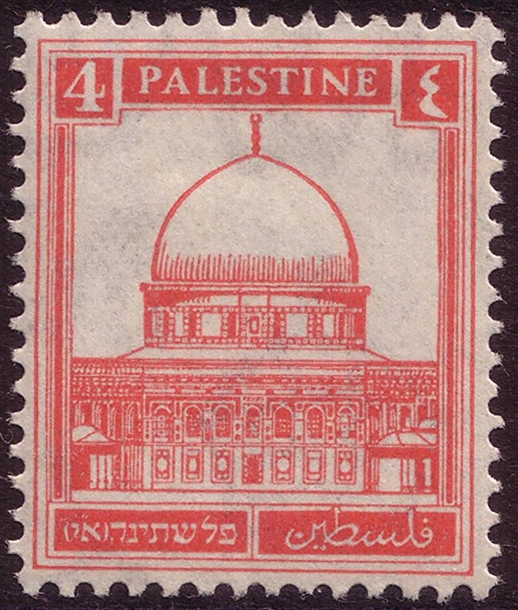
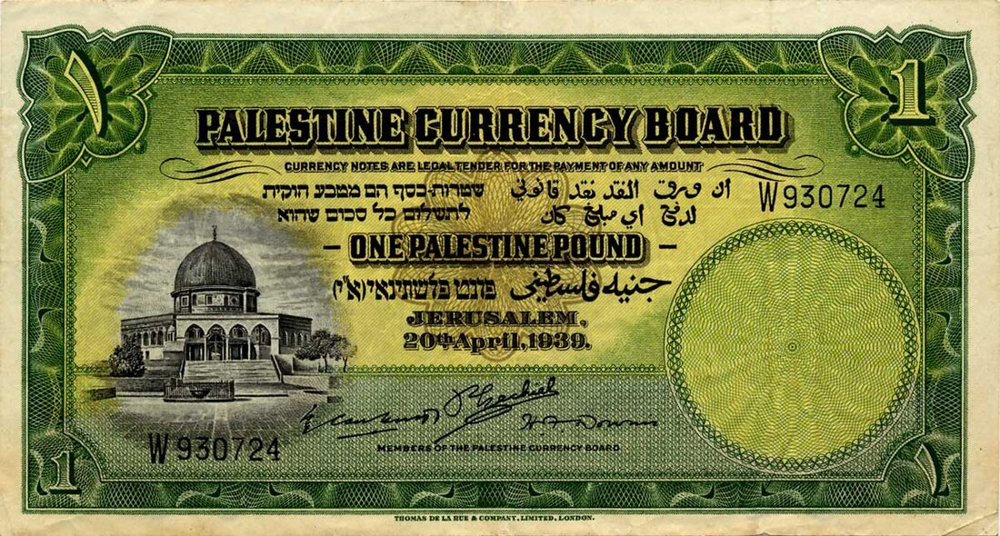
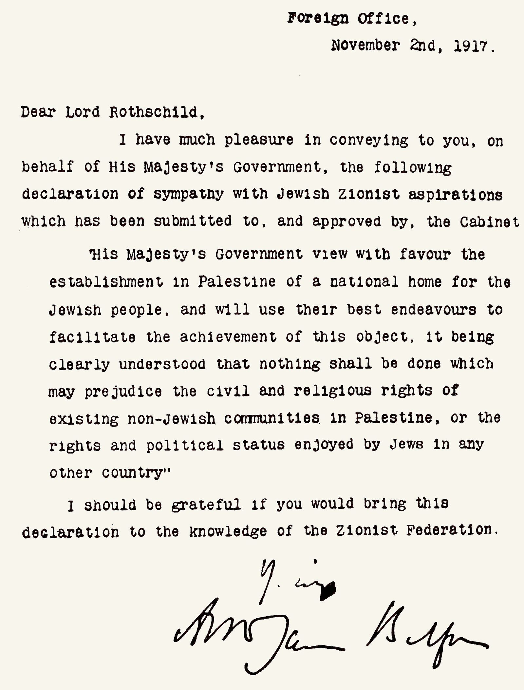
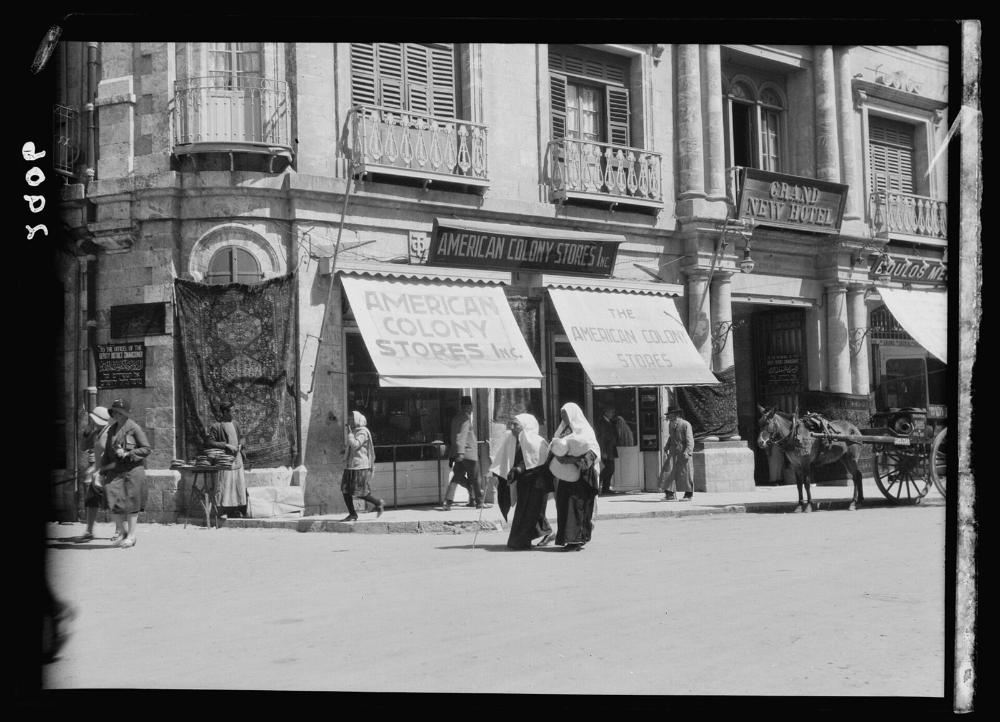
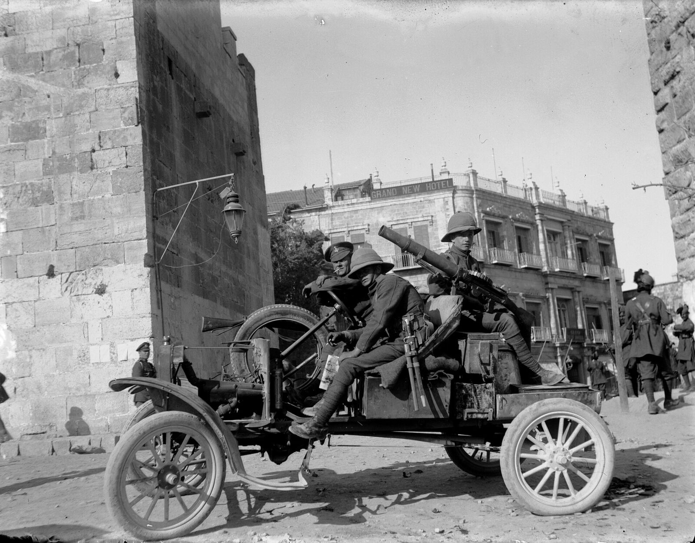
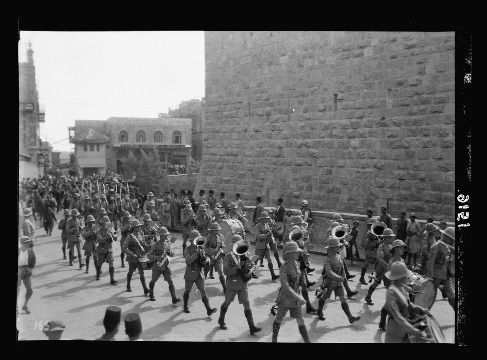
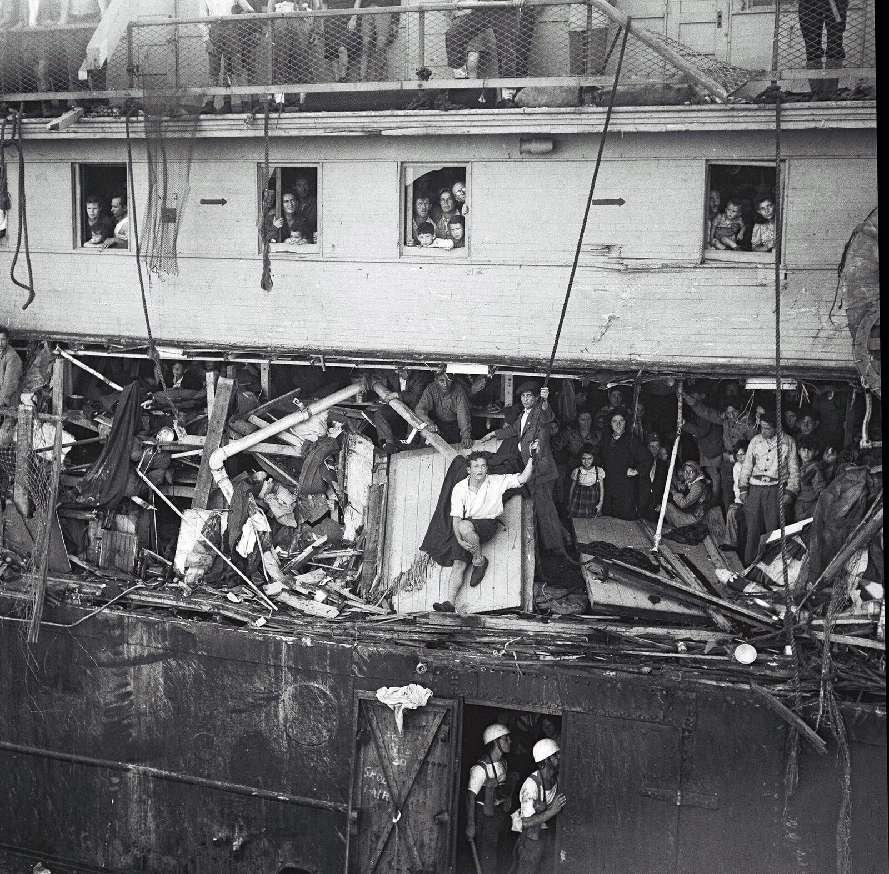
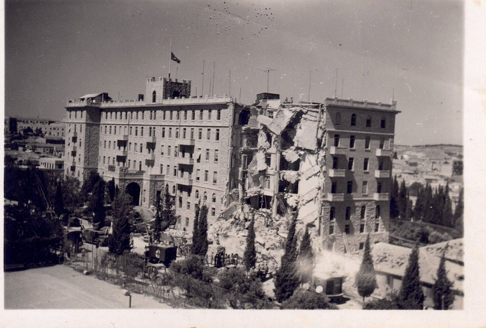
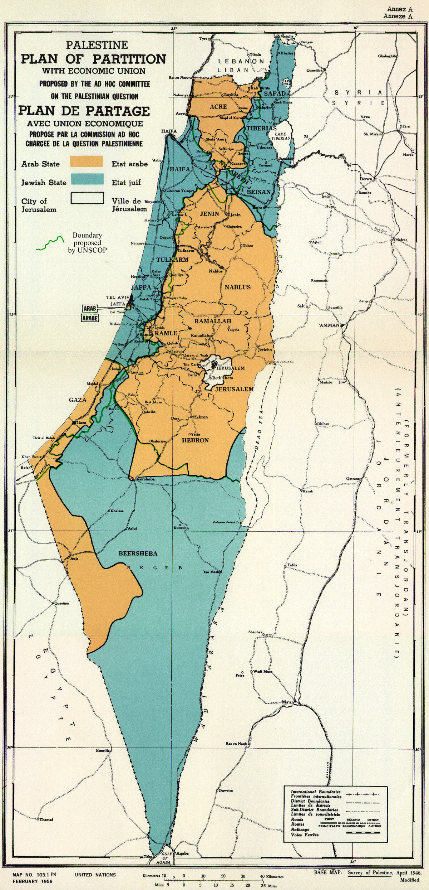

In 1917 Britain was at war with the Ottoman Empire, which ruled Palestine. Five weeks before British troops took Jerusalem, the Foreign Secretary, Arthur Balfour, wrote a one-sentence promise to a leader of Britain’s Jews. Thirty years of history came out of three of its phrases.
Palestine·فلسطين·פלשתינה (א״י)
Friday, 14 May 1948. 8:00 a.m.
Sixteen hours.
At midnight tonight, thirty years of British rule in Palestine come to an end. The British High Commissioner leaves Jerusalem this morning. Nobody has been appointed to replace him.
You sit with the cabinet of a state that does not exist yet. Before sunset you have to agree on the words that will create it.
What comes next is up to you.
Read this before we play. It takes about seven minutes. Content note: this page mentions the Holocaust, and a war in which civilians on both sides were killed and driven from their homes.
Begin



The first of three papers
A letter
London, 2 November 1917
“a national home for the Jewish people”
Zionism, a movement then twenty years old, held that the Jews were a nation and needed a country of their own in the land where their history began. Balfour wrote home. He did not write state. For thirty years nobody could agree on the difference.
“in Palestine”
Palestine was not empty. In 1922 it had about 750,000 people. One in nine was a Jew. Nearly all the rest were Arabs, Muslim and Christian, who had lived there for centuries.
“nothing shall be done which may prejudice the civil and religious rights of existing non-Jewish communities”
That is how the letter describes nine out of every ten people in Palestine: by what they are not. Britain had made two promises in one sentence. It could not keep both.




What the letter did
Thirty years
Palestine, 1917 to 1947
1920 to 1939
Two promises collide.
Britain ruled Palestine under a League of Nations mandate. Jews came and built towns, farms and a government in waiting. Arabs watched a promised “home” turn into a state in the making, and in 1936 they rose against British rule. Britain put the revolt down. Then, with war against Germany coming, it limited Jewish immigration to 75,000 people over five years. Fifteen weeks later, Germany invaded Poland.
1945 to 1947
The survivors.
Six million Jews were murdered in Europe. When the war ended, a quarter of a million Jewish refugees sat in camps with no homes to go back to. Britain kept its limit. In July 1947 the Royal Navy boarded the refugee ship Exodus off Palestine and sent its 4,500 passengers back to Germany.
1946 and 1947
Britain gives up.
Jewish underground fighters were now at war with the British. In 1946 they bombed British headquarters in the King David Hotel and killed ninety-one people. Britain had no money left and no policy that both peoples would accept. In February 1947 it handed the problem to the new United Nations. By autumn it had said it would leave.
The United Nations drew a map.

The second of three papers
A map
New York, 29 November 1947
The vote was 33 to 13, with ten abstentions. The United States and the Soviet Union, who agreed on almost nothing else that year, both voted yes.
The plan: two states, one Jewish and one Arab, and Jerusalem under UN rule. Britain had until August to leave. Both states were to exist by October 1948.
| Land | Jews | Arabs | |
|---|---|---|---|
| Jewish state | 56% | 498,000 | 325,000+ |
| Arab state | 43% | 10,000 | 807,000 |
| Jerusalem | UN rule | 100,000 | 105,000 |
| UN committee estimates. Counts of the Arabs inside the Jewish state run from 325,000 to about 407,000, depending on how the Negev Bedouin are counted. | |||
The Jewish leadership said yes. Its state would come in pieces and would not include Jerusalem, but it would be a state.
The Arab leadership said no. Arabs were two thirds of the people of Palestine, they said, and the plan gave a Jewish third more than half the land. They said they would fight it.
The fighting began the next day. The moment a Jewish state is declared, the armies of its neighbors are almost certain to invade.
The third paper
There will be a Jewish state.
Nobody has agreed what kind.
Draft · not for publication
DRAFT DECLARATION OF INDEPENDENCE
For debate by the People’s Administration
14 May 1948
ERETZ-ISRAEL was the birthplace of the Jewish people. Here their spiritual, religious and political identity was shaped. Here they first attained to statehood and gave to the world the eternal Book of Books. After being forcibly exiled, the people kept faith throughout their Dispersion and never ceased to hope for their return and the restoration of their political freedom.
In the year 5657 (1897), Theodor Herzl convened the First Zionist Congress, which proclaimed the right of the Jewish people to national rebirth in its own country—a right recognized in the Balfour Declaration and re-affirmed by the League of Nations Mandate. The massacre of millions of Jews in Europe demonstrated the urgency of re-establishing the Jewish State. On 29 November 1947, the United Nations General Assembly passed a resolution calling for the establishment of a Jewish State in Eretz-Israel.
ACCORDINGLY WE, MEMBERS OF THE PEOPLE’S COUNCIL, ARE HERE ASSEMBLED ON THE DAY OF THE TERMINATION OF THE BRITISH MANDATE AND, BY VIRTUE OF OUR NATURAL AND HISTORIC RIGHT AND ON THE STRENGTH OF THE RESOLUTION OF THE UNITED NATIONS GENERAL ASSEMBLY, HEREBY 1 Statehood.
THE STATE will be open for Jewish immigration and the Ingathering of the Exiles; it will be based on freedom, justice and peace as envisaged by the prophets of Israel; it will ensure complete equality of social and political rights to all its inhabitants irrespective of religion, race or sex; it will guarantee freedom of religion, conscience, language, education and culture; and it will be faithful to the principles of the Charter of the United Nations.
THE STATE 2 Borders.
WE APPEAL to the United Nations to assist the Jewish people in building its State. WE APPEAL to the Arab inhabitants of the State to preserve peace and participate in its upbuilding on the basis of full and equal citizenship. WE EXTEND our hand to all neighbouring states in an offer of peace and good neighbourliness.
PLACING OUR TRUST IN 3 God, WE AFFIX OUR SIGNATURES TO THIS PROCLAMATION AT THIS SESSION OF THE PROVISIONAL COUNCIL OF STATE, IN THE CITY OF TEL-AVIV, ON THIS SABBATH EVE, THE 5TH DAY OF IYAR, 5708 (14TH MAY, 1948).
The name of this State shall be: 4 Name
The third of three papers
A draft
Tel Aviv, Friday 14 May 1948
This is the typed draft of the Declaration of Independence. Most of it is settled. Four blanks are not, and each is a fight over what kind of state this will be.
Blank 1 of 4 · Statehood
Do you wait for the UN?
The draft acts “on the strength of” the UN plan. It still needs a verb.
“…hereby declare the establishment of a Jewish state.”
Independence now, on your own authority, as the American colonies did in 1776.
“…hereby declare a provisional government in the framework of the UN.”
Keeps the UN and Washington on your side, but the UN’s timetable is already dead.
Blank 2 of 4 · Borders
Where does it end?
The draft can accept the UN’s map, ignore it, or go past it.
“No mention of borders.”
The American Declaration named none. The army decides where the state ends.
“…accepts the borders of UN Resolution 181.”
The one map the world agreed to. It gives up Jerusalem and keeps a large Arab minority.
“…claims sovereignty over Jerusalem.”
The holiest city, under siege, with 100,000 Jews inside it.
“…claims sovereignty over all of Eretz-Israel.”
The Land of Israel, as the Bible has it. No map defines it, and every neighbor will read it as a threat.
Not a blank
“We appeal to the Arab inhabitants of the State to preserve peace and participate in its upbuilding on the basis of full and equal citizenship.”
Nobody at this table is Arab, and the draft gives the people it addresses no way to answer. Your cabinet is not voting on this line. Read it anyway.
Blank 3 of 4 · God
Who do you trust?
The signers place their trust in someone. Who says whether this is a state for a nation, a religion, or both.
“The Rock of Israel.”
A phrase from Hebrew prayer. Believers hear God; secular socialists hear the strength of the Jewish people.
“The Rock and Redeemer of Israel.”
Unmistakably God. The atheists will be asked to sign a prayer.
Leave it out.
No claim about God. The religious ministers will say that is no Jewish state at all.
Blank 4 of 4 · Name
What is it called?
The last blank, and the one most likely to be settled in a hurry.
“Israel.”
The people’s old name. It ties the state to Jews everywhere.
“Judea.”
The ancient kingdom, though on the UN’s map most of old Judea lies outside the Jewish state.
“Zion” or “Herzliya.”
Names for the movement and its founder, Theodor Herzl.
“Eretz-Israel.”
The Land of Israel, all of it. A name that claims more than any border.
You have argued about this for months.
The arguing is over. Before sunset this cabinet has to put one text on the table and sign it.
Before midnight there will be a state of the Jewish people.
What comes after that, no one at this table knows.
Now read your role sheet.